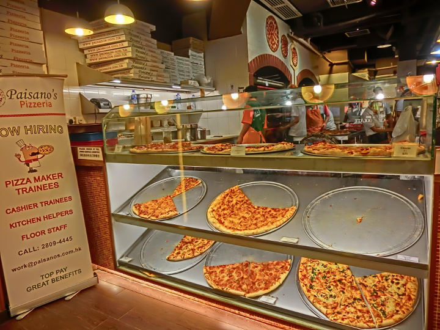

-
Institutional Websites!
This is an example about how to optimize institutional websites with techniques learn from Udacity
-
Another test ofWebsite Performance Optimization
Here is another sample page to check perfomance.
-
Mobile Web Development
Making mobile apps isn't so hard after all.
-

Cam's Pizzeria
Who wants a performant pizza?